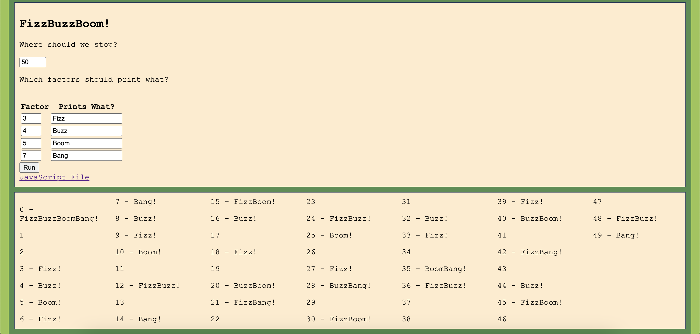

Lab 14: Debugging Tools & Strategies
Challenge
For this lab, we were asked to debug any of the previous labs that we had difficulties with. We experimented with the "debugger" tool in JavaScript to create breakpoints in our code.
Problems
Funnily, a problem I had with this lab was understanding how to fix the problems in my Lab 13. When I would resubmit the values into my input fields, the output wouldn't be replace, it would simply be added onto the previous inputted values.
Reflection
I thought this lab was very simple, yet effective since it taught us how to properly debug our code.
Results
The results of this lab are shown in the sections below!
Debugging
My debugged lab is Lab 13 linked on my homepage which is linked down below.
This is the picture of my properly functional Lab 13.